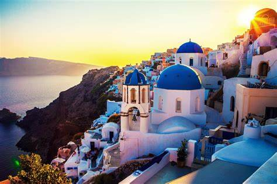
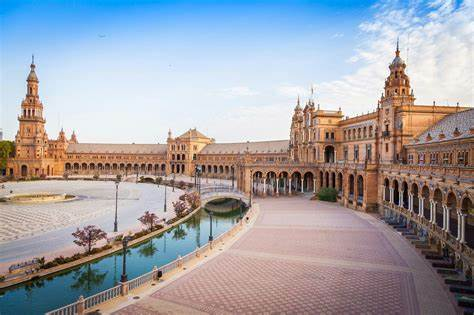

Grécia
 Viajar para a Grécia é como mergulhar em um cenário de sonho onde história, cultura e belezas naturais se entrelaçam harmoniosamente. Este país encantador é conhecido como o berço da civilização ocidental, lar de uma herança rica e fascinante que inclui monumentos icônicos como a Acrópole de Atenas e o Templo de Apolo em Delfos. Caminhar por esses locais históricos é como voltar no tempo e sentir a influência dos antigos filósofos, escritores e artistas que moldaram o mundo. Além de sua importância histórica, a Grécia cativa com suas paisagens deslumbrantes. As ilhas gregas, como Santorini e Mykonos, oferecem vistas de tirar o fôlego com casas brancas contrastando com o azul intenso do Mar Egeu. Praias paradisíacas, como as de Zakynthos e Creta, prometem relaxamento e momentos inesquecíveis sob o sol mediterrâneo. Por fim, a Grécia é um destino onde tradições antigas convivem com um estilo de vida vibrante e contemporâneo. De festivais culturais a vilarejos tranquilos e metrópoles movimentadas, a Grécia oferece algo para todos os gostos. É um lugar para explorar, relaxar e se inspirar, tornando cada momento da viagem uma memória inesquecível.
Espanha
 A Espanha é um destino irresistível que combina história, cultura vibrante e paisagens deslumbrantes. Com cidades emblemáticas como Barcelona e Madri, o país oferece uma mistura fascinante de arquitetura histórica e modernidade, onde obras-primas como a Sagrada Família e o Palácio Real encantam visitantes. Além disso, suas vilas pitorescas, como as da região da Andaluzia, revelam uma beleza charmosa e autêntica. A gastronomia espanhola é outro grande atrativo, com pratos mundialmente famosos como a paella, tapas e o jamón ibérico, acompanhados por vinhos excepcionais. Para os amantes de arte e cultura, o país abriga museus renomados, como o Museu do Prado, e tradições únicas, como o flamenco e festivais como a Tomatina. A Espanha também se destaca por suas praias ensolaradas e seu clima agradável, perfeito para relaxar em destinos como Ibiza ou Costa del Sol. Este é um país que celebra a vida com energia contagiante, tornando cada viagem uma experiência inesquecível. Seja explorando cidades cosmopolitas ou mergulhando em paisagens naturais, a Espanha encanta e surpreende a cada momento.
Canadá
O Canadá é um destino que encanta com sua diversidade natural, cultural e arquitetônica. Reconhecido por suas paisagens deslumbrantes, o país oferece desde majestosas montanhas e lagos cristalinos nas Montanhas Rochosas até as impressionantes Cataratas do Niágara, que são um espetáculo à parte. Para os amantes da natureza, há também a chance de observar a vida selvagem, como ursos e alces, ou até mesmo vislumbrar as mágicas luzes da aurora boreal em regiões mais ao norte. Além disso, o Canadá é um país multicultural, onde diferentes tradições convivem harmoniosamente. Cidades vibrantes como Toronto, Vancouver e Montreal combinam modernidade com charme histórico, oferecendo uma rica cena cultural, gastronômica e artística. Da arquitetura europeia no coração de Quebec às paisagens urbanas modernas de Calgary, há sempre algo a descobrir. A hospitalidade canadense é outro atrativo. Conhecido por seu povo acolhedor e educado, o Canadá faz com que os visitantes se sintam em casa. Seja em aventuras ao ar livre ou explorando centros urbanos, o país oferece uma experiência memorável e acolhedora para todos os tipos de viajantes.